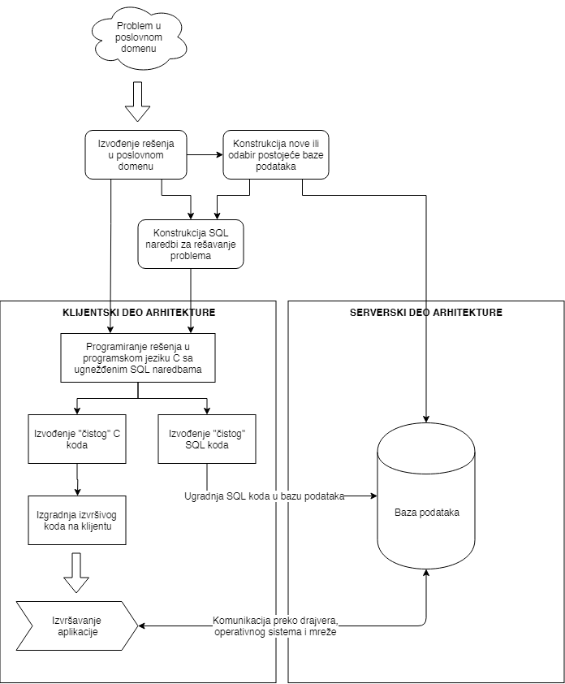

1. Arhitektura klijent-server
DB2 je sistem za upravljanje relacionim bazama podataka (RSUBP) koji nudi veoma moćne softverske alate za programiranje baza podataka. Ovi alati su korisni kako administratorima baza podataka, tako i programerima aplikacija koje koriste mogućnosti relacionih baza podataka. Pod programiranjem baza podataka možemo smestiti naredne dve aktivnosti:
- Programiranje na serveru, odnosno, programiranje SQL rutina.
- Programiranje na klijentu kroz više programske jezike.
Programiranje na klijentu podrazumeva korišćenje viših programskih jezika kao što su C, C++, Java, PHP i mnogih drugih. Često se ovi jezici nazivaju i matični jezici (engl. host language). Korišćenjem nekih od razvojnih okruženja, ti programski jezici se koriste za pristupanje interfejsu za programiranje aplikacija (engl. application programming interface, skr. API). Kroz ovaj interfejs se zatim, preko drajvera koji je dostupan programerima, aplikacija povezuje sa RSUBP i izvršava SQL upite. Ovo povezivanje sa bazom podataka se izvršava kroz mogućnosti operativnog sistema na kojem se klijentska aplikacija izvršava.
Sa druge strane, programiranje na serveru obuhvata programiranje tzv. SQL rutina (engl. SQL routine). SQL rutina može biti: ugrađena procedura (engl. stored procedure), korisnički-definisana funkcija (engl. user-defined function) ili okidač (engl. trigger). Svi ovi tipovi SQL rutina podrazumevaju programiranje operacija koje se čuvaju u samoj bazi podataka. Programeri zatim imaju mogućnost poziva ovih sačuvanih procedura, odn. njihovog izračunavanja.
 i programiranje na serveru (desno).")
1.1 Opis razvoja klijentskih aplikacija
Prilikom razvijanja klijentskih aplikacija važno je odrediti viši programski jezik koji će se koristiti. Odabir konkretnog višeg programskog jezika u određenoj meri diktira proces razvoja u kontekstu API-ja koji je dostupan za dati viši programski jezik. Međutim, bez obzira koji se viši programski jezik koristi, koncepti koji se koriste za rad sa bazama podataka su isti. Ono što dodatno olakšava ovaj proces jeste postojanje različitih elemenata softverskog paketa koji se zove Db2 Data Server Client. Neki od elemenata ovog paketa sa kojima ćemo se susreti u ovoj knjizi su:
- Prekompilatori za C/C++, COBOL i Fortran.
- Podrška za ugnežđene SQL naredbe u višim programskim jezicima u vidu programerskih biblioteka, zaglavlja za uključivanje u izvorni kod i primere izvornih kodova.
- Podrška za aplikacije zasnovane na ODBC i Db2 Call Level Interface (Db2 CLI) standardima.
- IBM Data Server Driver za JDBC i SQLJ aplikacije.
- IBM Data Studio softversko okruženje za razvoj aplikacija i radom sa Db2 bazama podataka.
Opišimo sada proces razvoja klijentskih aplikacija na primeru aplikacije sa ugnežđenim SQL naredbama u programskom jeziku C. Ovaj proces će biti opisan na dovoljno apstraktnom nivou da ne ulazi u detalje programskog jezika C i detalja procesa vezanim za njega, ali će biti i dovoljno konkretan da čitalac stekne opšti utisak u način razvoja klijentskih aplikacija za rad sa Db2 bazama podataka.
Nakon prepoznavanja problema i izvođenja njegovog rešenja u poslovnom modelu, pristupa se konstrukciji baze podataka i definisanju potrebnih SQL naredbi koje će se koristiti u njegovom rešavanju. Baza podataka se zatim instalira na Db2 serveru baze podataka, a SQL naredbe se koriste u izvornom kodu višeg programskog jezika C prateći odgovarajući C/SQL Db2 API. Aplikacija se kodira na klijentu koji ima instaliran Db2 Data Server Client softverski paket sa alatima za razvoj aplikacija. S obzirom da kod predstavlja “mešavinu” C naredbi i SQL naredbi, potrebno je izvesti iz tog koda nova dva međukoda: jedan koji ima “čiste” C naredbe i drugi koji ima “čiste” SQL naredbe. Prvi međukod se podvrgava procesu prevođenja kao i svaki drugi C program, dok se drugi kod proverava nad bazom podataka nad kojom su definisane SQL naredbe koje se koriste. Ukoliko nema grešaka, SQL naredbe se ugrađuju u bazu podataka, a od izvornog C koda se formira izvršni program.
Izvršni program se zatim instalira na odgovarajućim uređajima gde će se koristiti (pri čemu je potrebno da ti sistemi imaju odgovarajuće Db2 drajvere za komunikaciju sa Db2 serverom baze podataka - ovo je po pravilu lakše instalirati od celog Db2 Data Server Client softverskog paketa). Prilikom pokretanja programa, aplikacija izvršava C naredbe kao i svaki drugi C program, a kada naiđe na deo koda koji upravlja bazom podataka, program vrši komunikaciju sa datom bazom podataka preko odgovarajućeg Db2 drajvera, korišćenjem mogućnosti operativnog sistema i mreže, čime se prethodno ugrađene SQL naredbe izvršavaju. Rezultati izvršavanja tih SQL naredbi se šalju nazad programu, uz eventualno izveštavanje o greškama ili upozorenjima do koje je došlo u sistemu za upravljanje bazom podataka.
